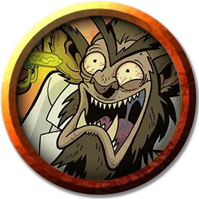

Томми «Две задницы»
Tommy Two-Butts
Средний Гуманоид (Гоблиноид), хаотично-злой, именной НИП

Класс Доспеха 16 (шкурный доспех, щит)
Хиты 27 (5к8 + 5)
Скорость 30 футов
| мод | спас | ||
|---|---|---|---|
| СИЛ | 15 | +2 | +2 |
| ЛОВ | 14 | +2 | +2 |
| ТЕЛ | 13 | +1 | +1 |
| мод | спас | ||
|---|---|---|---|
| ИНТ | 21 | +5 | +5 |
| МДР | 11 | +0 | +0 |
| ХАР | 9 | −1 | −1 |
Навыки Выживание +2, Скрытность +6
Чувства тёмное зрение 60 футов, пассивное Восприятие 10
Языки Общий, Гоблинский
Опасность 1 (200 опыта)
Бонус мастерства +2
Особенности
Жестокость. Когда Томми попадает атакой рукопашным оружием, атака причиняет цели одну дополнительную кость урона оружия (учтено ниже).
Внезапная атака. Если Томми застаёт врасплох существо и попадает по нему атакой в первом раунде сражения, цель получает от атаки дополнительный урон 7 (2к6).
Действия
Моргенштерн. Рукопашная атака оружием: +4 к попаданию, досягаемость 5 футов, одна цель. Попадание: 11 (2к8 + 2) колющего урона.
Метательное копье. Рукопашная или дальнобойная атака оружием: +4 к попаданию, досягаемость 5 футов или дистанция 30 футов/120 футов, одна цель. Попадание: 5 (1к6 + 2) колющего урона от дальнобойной атаки или 9 (2к6 + 2) колющего урона от рукопашной атаки.